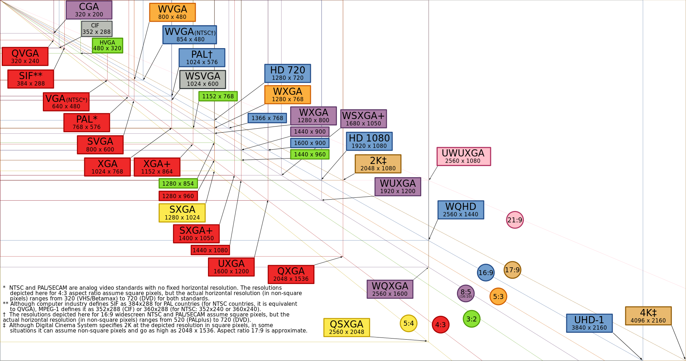
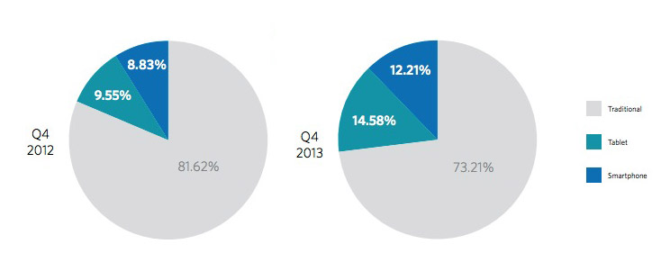
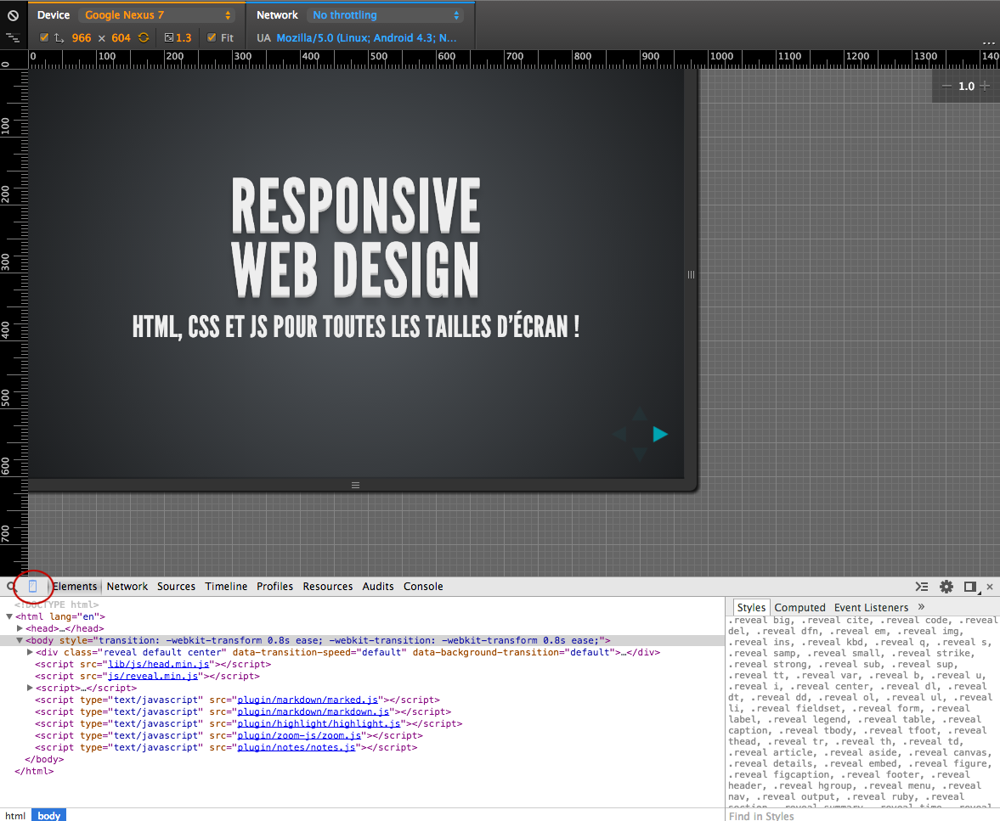
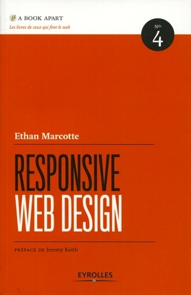

Responsive
Web Design
HTML, CSS et JS pour toutes les tailles d'écran !
Qui je suis ?
Perrine Bocquin,
développeuse front end en agence web depuis 6 ans,
en freelance depuis 1 mois !
De quoi on parle ?
Qu'est-ce que le responsive ?
Un ensemble de technologies facilitant
la consultation, la lecture et la navigation sur un site web,
quelque soit la taille de l’écran du terminal.

Des modes de consultation variés
sur écran de bureau, d’ordinateur portable, sur smartphone, tablette, en portait ou paysage, sur une télévision…
Les usages mobiles
sont de plus en plus populaires
Difficultés pour l'utilistateur
si le site web n'est pas adapté à son mode de consultation
- scroll horizontal
- obligé de zoomer sur les textes pour lire
- élements en fixed qui cachent de larges parts de la page
- menu inadapté, navigation complexe
- liens trop petits, incliquables
- etc.
Solutions
- Version mobile dédiée
- Application native
- Web App
- Site responsive !
Réussir le passage vers petits écrans
- Garder un site toujours agréable à consulter
- Assurer une lecture comfortable
- Faire attention aux perfomances
- Avoir des interactions adaptées aux surfaces tactiles
Quelques exemples
TODO
IMAGEQuelques exemples
TODO
IMAGEQuelques exemples
TODO
IMAGEQuels sont les outils ?
HTML, beaucoup de CSS, un peu de Javascript
Pour tester
On réduit la taille du navigateur pour voir ce que ça donne !
A la fin, il est tout de même necessaire de tester sur de vrais terminaux.
Tester sous Chrome
Developers tools > icone téléphone > plein de choix de devices
On s'y met !
Un conseil pour commencer
Penser dès le début qu’on ignore sur quelle taille d’écran le site sera consulté :
ça permet de gagner du temps !
Ajuster la taille des contenus
en fonction de l'espace disponible :
- taille des textes relative
- blocks adaptatifs
- points de rupture
- réorganisation
Taille des textes
On utilise des unités relatives pour les textes (plus de px)
comme les em, rem et pourcentages.
Le navigateur a une taille de texte de base (souvent 16px), que l'utilisateur peut choisir de changer.
Cette taille de base peut être différente en fonction du type d'appareil.
Le meilleur moyen de garder des textes homogènes est d’utiliser une taille de texte relative à la taille du navigateur.
Taille des textes
En pratique
| EM |
Cette taille se calcule relativement à la font-size du parent. Si le parent fait 14px et qu’on veut que l’enfant en fasse 28 : 28 / 14 = 2em
|
| % |
Fonctionne comme les em, relativement à la taille du parent. Si le parent fait 14px et qu’on veut que l’enfant en fasse 28 : ( 28 / 14 ) x 100 = 200%
|
| REM |
Fonctionne comme les em, mais par rapport à la taille du body uniquement. On part du principe que le body fait 16px. Quelque soit la taille du parent de mon élement, si qu’on veut que l’enfant en fasse 28, on calcule directement par rapport au body : 28 / 16 = 1.75remAttention : compatible IE9+ seulement |
Taille des textes
Tester
Pour voir le résultat facilement en fonction des différentes tailles de texte :
| FF |
Affichage > zoom > cocher “Zoom texte seulement” puis zoomer et dézoomer pour voir le résultat (“Cmd” + “+”, “Cmd” + “-” et “Cmd” + “0”) |
| Chrome | Paramètres > Paramètres avancés > Contenus web > Changer la taille de police |
Taille des textes
Exercice n°1
TODO
Passer les textes du document des px en rem.
Partir du principe que le body fait 16px.
Garder les px pour la compatibilité ie8.
p {
font-size: 12px;
font-size: .75rem;
}Taille des textes
Exercice n°2
TODO
Passer les textes du document des em.
Attention à l'héritage !
p {
font-size: .75em;
}Contenus fluide
La taille des élements ne doit pas être figée en pixels
mais fluide en pourcentage.
Contenus fluide
Plusieurs types de layouts
| Fixe |
Rigide, en pixels. On n'en veut pas. |
| Fluide |
Ou liquide. La taille est en pourcentage du parent, s'adapte à l'espace disponible. |
| Elastique |
Les tailles des élements sont en em/rem, donc relatifs à la taille du texte. Si j’ai une font-size de base de 48px, alors mon site, bien que sur desktop, apparait en version mobile. Exemple: ClearLeft |
| Mixe | Un mélange de tout cela |
Contenus fluide
Propriétés à utiliser
(pas exclusives, mais importantes)
position |
relative, absolute, etc. | Sert de référence pour les tailles en % : un élement prend sa taille en fonction de son parent postionné le plus proche |
max-width |
en px ou % |
Pour les containers. Plutôt que width. |
width |
en % |
Pour les contenus. Pour calculer : (Element (px) / Contexte (px) ) x 100 = Resultat (%) |
Contenus fluide
Propriétés à utiliser
Pour des images qui s'adaptent au contexte :
img {
max-width: 100%;
height: auto;
}
L'image prend toute la taille disponible en largeur,
et sa hauteur est calculée automatiquement par le navigateur.
Contenus fluide
Propriétés à utiliser
Pour se faciliter la vie avec les tailles des éléments :
*, *:before, *:after {
box-sizing: border-box;
}
La taille définie pour elements avec cette propriété inclu le padding et les border
(avec la valeur par défaut, content-box, ne prend en compte que le contenu)
Contenus fluide
Plus d'infos sur le box-model
et box-sizing
Contenus fluide
Exercice
METTRE EN LIGNE
Fluidifier les contenus de la page :
- passer les textes en taille relative (comme vu précédemment)
- donner une largeur maximale au container au lieu d’une largeur fixe
- passer les contenus en %age au lieu des pixels (ne pas oublier de positionner les elements en relatif !) : titre, menu, diapositives, titre du footer, liens du footer.
- pour ceux qui finissent en avance : on ajoute la librairie javascript Masonry pour ne pas avoir de “trous” dans la grille de contenus
Pour aller plus loin
Un peu de lecture :

Responsive Web Design,
par Ethan Marcotte
Editions Eyrolles
Pour aller plus loin
Une newsletter (en anglais) :
Gratuite, envoyée une fois par semaine.
Parle de conception, informe sur les outils, donne des conseils, des tutoriels et des liens d'inspiration.
Oh et pour finir
La correction des exercices ;-)
Taille des textes
TODO
Exercice n°1Exercice n°2
Merci
♥
Slide Backgrounds
Set data-background="#007777" on a slide to change the full page background to the given color. All CSS color formats are supported.
Image Backgrounds
<section data-background="image.png">Repeated Image Backgrounds
<section data-background="image.png" data-background-repeat="repeat" data-background-size="100px">Clever Quotes
These guys come in two forms, inline:
“The nice thing about standards is that there are so many to choose from”
and block:
“For years there has been a theory that millions of monkeys typing at random on millions of typewriters would reproduce the entire works of Shakespeare. The Internet has proven this theory to be untrue.”
Pretty Code
function linkify( selector ) {
if( supports3DTransforms ) {
var nodes = document.querySelectorAll( selector );
for( var i = 0, len = nodes.length; i < len; i++ ) {
var node = nodes[i];
if( !node.className ) {
node.className += ' roll';
}
}
}
}
Courtesy of highlight.js.
Fragmented Views
Hit the next arrow...
... to step through ...
any type- of view
- fragments
Fragment Styles
There's a few styles of fragments, like:
grow
shrink
roll-in
fade-out
highlight-red
highlight-green
highlight-blue
current-visible
highlight-current-blue